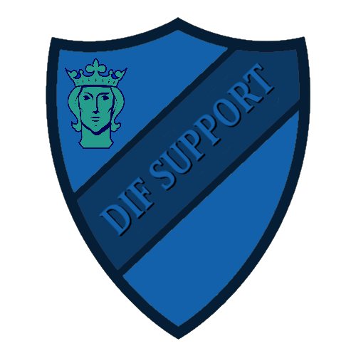

Fans
Ultra Caos Stockholm är en ultrasgruppering som grundades den 2 oktober 2003 i samband med DIF:s Svenska Cupen-kvartsfinal mot aik på Stockholms Stadion.
UCS är en grupp med ideal som har sina rötter i en ultraskultur formad för flera decennier sedan, under en tid då fotbollen och läktarna såg annorlunda ut jämfört med i dag. Mycket inspiration kommer från den tidens sydeuropeiska läktarkultur, men vi är av uppfattningen att vi formar vår egen kultur i Djurgården. Detta gör vi genom att värna om vår egen historia och dess grundpelare samtidigt som vi låter oss inspireras av andra.
Ultraskulturen uttrycker sig olika i olika delar av världen. I UCS är mentalitet, engagemang och kamratskap ideal som vi är är måna om. På läktaren är sången och ett visuellt stöd i form av flaggor, banderoller, tifon och pyroteknik de viktigaste elementen. Vi eftersträvar ett kompromisslöst stöd till DIF på hemma- och bortaplan och hoppas kunna sprida den moralen bland våra medsupportrar i Djurgårdsfamiljen.
På Stockholmsarenan står vi bakom vår banderoll längst ner, i mitten på Sofialäktaren.
